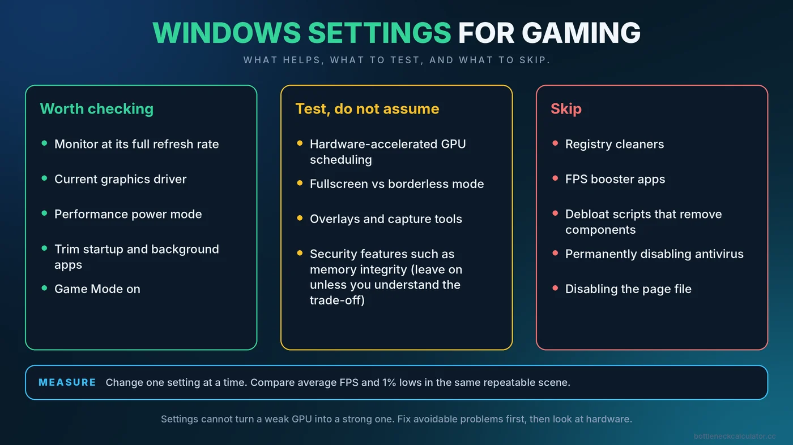

Windows Settings for Gaming Performance: What Helps and What to Skip
Search for ways to speed up Windows for games and you will find endless lists of tweaks, many of them useless and a few of them risky. This guide sticks to settings that are safe, reversible and worth your time, and tells you honestly which popular tricks to ignore.

Set Realistic Expectations First
Windows settings cannot turn a weak graphics card into a strong one. If your frame rate is limited by the hardware, the biggest gains come from game settings, resolution or an upgrade, not from system tweaks. What Windows settings can do is remove avoidable problems: a monitor running at the wrong refresh rate, apps stealing resources in the background, or a power mode that holds your CPU back. Fix those first, then measure.
The wording of menus differs a little between Windows 10 and Windows 11, so look for the closest match if a label is not identical on your PC.
Settings That Are Worth Checking
1. Make sure your monitor runs at its full refresh rate
This is the most common and most overlooked mistake. A 144Hz monitor can sit at 60Hz after a driver reinstall or when connected with the wrong cable. Open Settings, then System, Display, Advanced display, and check the refresh rate. If the highest option is lower than your monitor supports, try a different cable or port. For how refresh rate, V-Sync and variable refresh interact with FPS, read our guide to V-Sync, G-Sync, FreeSync and FPS caps.
2. Keep your graphics driver current
New game releases often get driver optimizations. Install updates from NVIDIA, AMD or Intel directly, and avoid third-party driver updater tools. If a new driver causes problems, roll back to the previous one.
3. Use the right power mode
On a desktop, set the power mode to Balanced or Best performance. On a laptop, plug in the charger and choose a performance mode, because battery operation usually reduces both CPU and GPU limits. If your processor seems to be stuck at low clocks, this is one of the first things to check. Our article on laptop bottlenecks explains why portable hardware is so sensitive to this.
4. Turn on Game Mode
Game Mode is designed to reduce background activity, such as some update tasks, while a game is running. The gain is usually small, but it is free and harmless on most systems. If you notice a specific game behaving worse with it on, switch it off and compare.
5. Trim startup and background apps
Open Task Manager and look at the Startup apps tab. Disable launchers, updaters and utilities you do not need at boot. Before you start a game, check the Processes tab for anything using a lot of CPU, disk or memory. Browsers with many tabs, cloud backup tools and video players are frequent culprits. If one core sits at a high percentage during play, read how to fix 100% CPU usage in games.
6. Review overlays and capture tools
Overlays from Xbox Game Bar, Discord, graphics driver suites and recording tools can add overhead, particularly if you run several at once. Keep the ones you use, and disable the rest. Background recording is convenient but uses GPU and storage resources continuously.
7. Keep your game drive healthy
Leave free space on the drive that holds your games and Windows. A nearly full drive can slow installs, updates and shader cache creation. If you are still on a hard drive, see our guide to SSD vs HDD vs NVMe for gaming.
8. Schedule updates sensibly
Use active hours so Windows Update does not install or scan in the middle of a session. A pending restart can also leave services running in the background.
Settings to Test, Not Assume
Hardware-accelerated GPU scheduling
This option, found under display graphics settings on supported systems, lets the graphics card manage more of its own scheduling. Effects range from slightly positive to slightly negative depending on the card, driver and game, and some features may have their own requirements. Test it with a repeatable scene and keep whichever setting gives smoother results.
Windowed game optimizations and fullscreen modes
Modern Windows handles borderless and fullscreen games in a way that is often close to exclusive fullscreen. If a game stutters, try switching its display mode and compare 1% lows. Do not assume one mode is always better.
Memory integrity and other security features
Some users report a performance cost from virtualization-based security features on certain systems. These protect your PC, so leave them on unless you fully understand the trade-off, and measure carefully before changing anything.
Popular Tweaks to Skip
- Registry cleaners and "FPS booster" apps. They rarely help and can cause problems or bundle unwanted software.
- Debloat scripts that remove system components. They can break updates, drivers or features you rely on later.
- Disabling antivirus permanently. It leaves you exposed for little benefit. Built-in protection is generally lightweight during play.
- Disabling the page file. Games and Windows expect it, and removing it can cause crashes.
- Setting every game to high priority. The gain is minor, and it can make other apps unresponsive.
How to Measure Whether a Change Helped
- Choose a repeatable scene or the game's built-in benchmark.
- Record average FPS and 1% lows with a monitoring overlay before changing anything.
- Change one setting at a time and rerun the same test.
- Keep only changes that give a clear, repeatable improvement.
Run each test more than once, because small differences between runs are normal. For guidance on reading the numbers, see how to check PC usage and the stuttering and 1% lows guide.
If Windows Settings Do Not Help
When you have done all of the above and performance is still short of your goal, the cause is usually the hardware or the game settings. Check whether your CPU or GPU is the limiter with our guide to how to check a PC bottleneck, then follow the ordered steps in how to fix a PC bottleneck and boost FPS.
Conclusion
A handful of simple checks, such as the correct refresh rate, current drivers, the right power mode and a clean startup list, remove most avoidable slowdowns. Skip the miracle tweaks, test the uncertain ones, and measure every change. To see whether your hardware is balanced in the first place, try the free PC Bottleneck Calculator.
Frequently Asked Questions
What Windows settings improve gaming performance the most?
Setting the correct monitor refresh rate, updating the graphics driver, using a performance power mode, and closing heavy background apps. These fix common avoidable problems rather than adding raw speed.
Should I turn on Game Mode?
Usually yes. It is free and generally harmless, and may reduce background interruptions. If a game runs worse with it on, turn it off and compare.
Is hardware-accelerated GPU scheduling worth enabling?
It depends. Results vary by graphics card, driver and game, so test it with a repeatable scene and keep whichever setting runs smoother.
Do FPS booster programs work?
Almost never in a meaningful way. Most do what you can do manually, such as closing background apps, and some bring risks of their own.
Will reinstalling Windows increase FPS?
Only if your current installation has a real problem, such as heavy background software or corrupted files. On a healthy system, the gain is usually small.